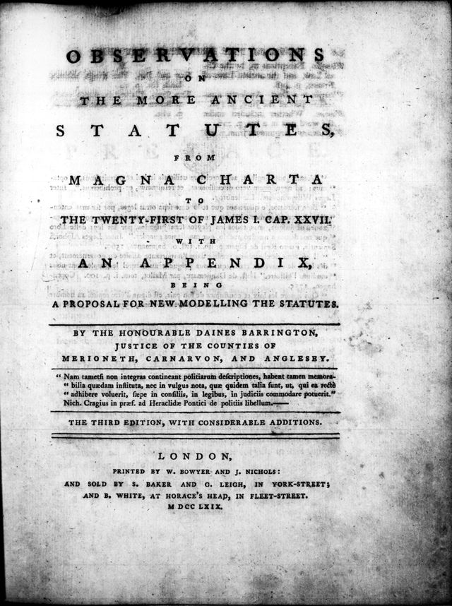
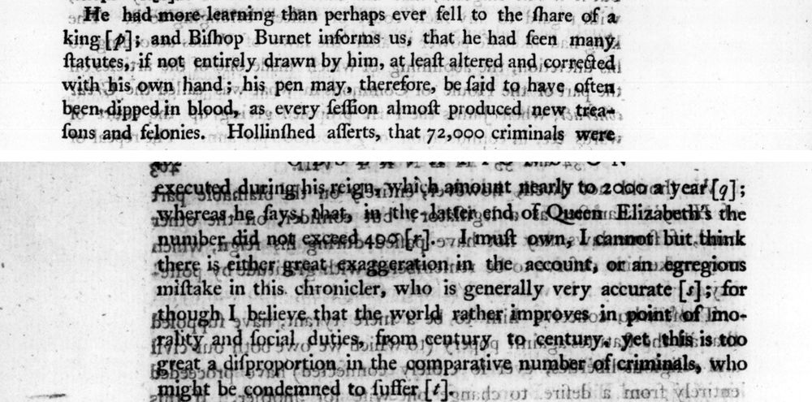
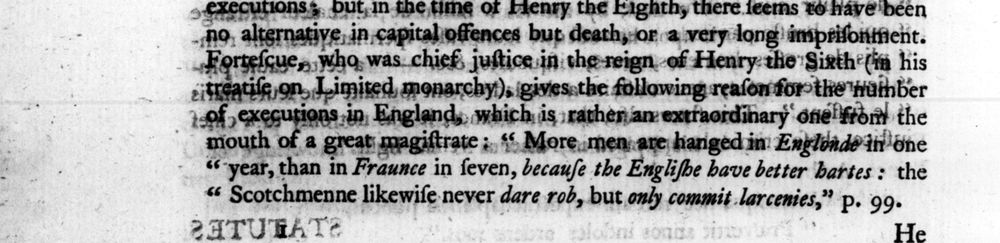

“Hollinshed asserts, that 72,000 criminals were executed” (pp. 461–462)

English: 3rd ed., London 1769, under the statutes of 34 and 35 Henry VIII; foot of p. 461 (scan) and top of p. 462 (scan). Highlighted: what Lecky takes.

He had more learning than perhaps ever fell to the share of a king [p]; and Bishop Burnet informs us, that he had seen many statutes, if not entirely drawn by him, at least altered and corrected with his own hand; his pen may, therefore, be said to have often been dipped in blood, as every session almost produced new treasons and felonies. Hollinshed asserts, that 72,000 criminals were executed during his reign, which amount nearly to 2000 a year [q]; whereas he says, that, in the latter end of Queen Elizabeth’s the number did not exceed 400 [r]. I must own, I cannot but think there is either great exaggeration in the account, or an egregious mistake in this chronicler, who is generally very accurate [s]; for though I believe that the world rather improves in point of morality and social duties, from century to century, yet this is too great a disproportion in the comparative number of criminals, who might be condemned to suffer [t].
Two of Barrington’s footnotes on this page are worth having. Note [r]: “It is not believed that there are 100 criminals executed in a year at present”, and “If we may believe Fuller, the duke of Alva bragged, at an entertainment, that he had caused 18,000 convicts to be executed.” Note [s], on Holinshed’s accuracy, quotes John Donne’s satire against him: “More than ten Hollinsheds, or Halls, or Stowes.”
Where the 72,000 comes from: Harrison, Cardano and the Bishop of Lisieux
English: William Harrison, Description of England, book II, in the chapter “Of sundrie kinds of punishments appointed for malefactors”, from the text of Holinshed’s Chronicles, vol. I (London, 1807, reprinting the edition of 1587), Project Gutenberg 42506. Not read on a scan; spelling as in that text.
Our third annoiers of the common-wealth are roges, which doo verie great mischeefe in all places where they become. … For there is not one yeare commonlie, wherein thrée hundred or four hundred of them are not deuoured and eaten vp by the gallowes in one place and other. It appeareth by Cardane (who writeth it vpon the report of the bishop of Lexouia) in the geniture of king Edward the sixt, how Henrie the eight, executing his laws verie seuerelie against such idle persons, I meane great théeues, pettie théeues and roges, did hang vp thréescore and twelue thousand of them in his time. He seemed for a while greatlie to haue terrified the rest: but since his death the number of them is so increased …
Harrison’s “thrée hundred or four hundred” a year in his own day is Barrington’s “did not exceed 400” for the end of Elizabeth’s reign. The “geniture” is Cardano’s horoscope of Edward VI; this edition has not checked Cardano’s Latin. The words “Holinshed asserts” are true only in the sense that Harrison’s Description was printed in Holinshed’s Chronicles; Harrison wrote it.
“Because the Englishe have better hartes” (p. 462, note [t])
English: 3rd ed., London 1769, p. 462, Barrington’s note [t], scan. Highlighted: Lecky’s quotation.

[t] The milder punishment of transportation may indeed prevent many executions; but in the time of Henry the Eighth, there seems to have been no alternative in capital offences but death, or a very long imprisonment. Fortescue, who was chief justice in the reign of Henry the Sixth (in his treatise on Limited monarchy), gives the following reason for the number of executions in England, which is rather an extraordinary one from the mouth of a great magistrate: “More men are hanged in Englonde in one year, than in Fraunce in seven, because the Englishe have better hartes: the Scotchmenne likewise never dare rob, but only commit larcenies,” p. 99.
Lecky cites this as “p. 461”; in the 1769 edition the note hangs from p. 462, though the passage it annotates begins on p. 461. Lecky’s quotation follows Barrington’s almost exactly (he writes “English” for “Englishe” and breaks the sentence at “hartes”). The note runs on to p. 463 (scan): “It appears, by this citation from Fortescue, that the open robber was in these times considered as spirited and enterprizing, even by a chief justice of England.” Lecky’s “curious complacency” is his own word for it.
Further down the rabbit hole
Sources that Lecky cites in the notes next to the ones that cite this page.
- Berkeley, The QueristA bishop’s questions to Ireland: hard labour instead of the gallows
- Strutt, Horda Angel-cynnan; or, the Manners and Customs of the Inhabitants of EnglandGod on the upper stage and the Devil at Coventry: an antiquary’s view of old England
- Simancas, De Catholicis InstitutionibusAn inquisitor’s handbook: no faith with heretics, and torture
- Buckle, History of Civilization in EnglandWeather and credulity, and the Scottish clergy’s Devil who had been studying for five thousand years
- Descartes, Réponses aux sixièmes objectionsReal fire, or an idea of fire? The damned and the deceiving God
- Hallam, Literature of Europe and Constitutional HistoryHow Lecky quotes Hallam on persecution


Backlinks
Every place in Rationalism in Europe that links to this page (generated automatically when the site is built).